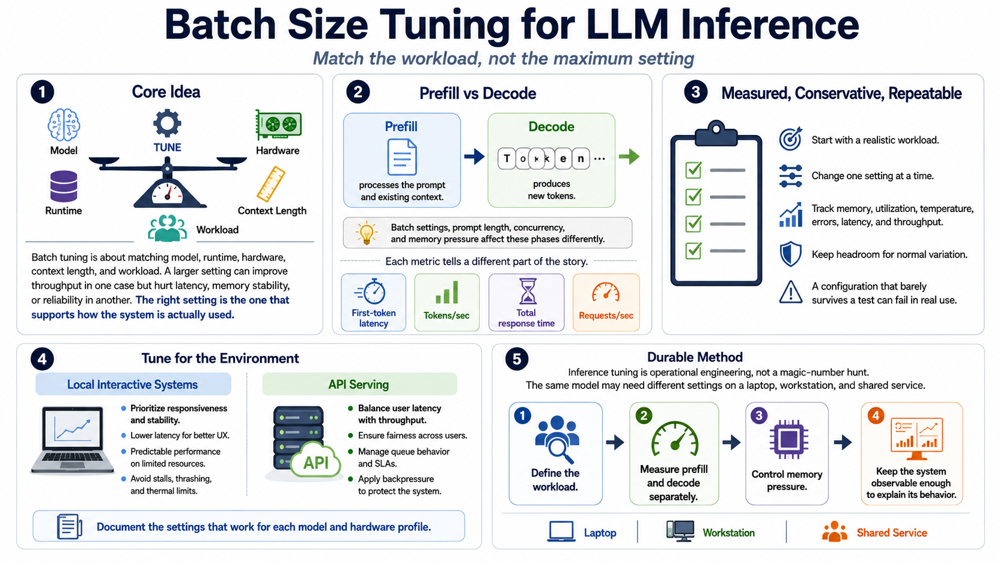

Course Summary and Key Takeaways
Connecting to LMS... Progress: in progress

Narration
Batch size tuning for LLM inference is about matching the model, runtime, hardware, context length, and workload. It is not a contest to maximize every setting. A larger value can improve throughput in one situation and damage latency, memory stability, or reliability in another. The right setting is the one that supports the way the system is actually used.
The most important distinction is between prefill and decode. Prefill processes the prompt and existing context. Decode produces new tokens. Batch settings, prompt length, concurrency, and memory pressure affect those phases differently. That is why first-token latency, tokens per second, total response time, and requests per second all tell different parts of the story.
Good tuning is measured, conservative, and repeatable. Start with a realistic workload. Change one setting at a time. Track memory, utilization, temperature, errors, latency, and throughput. Keep enough headroom for normal variation, because a configuration that barely survives a test can fail under real use.
For local interactive systems, prioritize responsiveness and stability. For API serving, balance user latency with total throughput, fairness, queue behavior, and backpressure. In both cases, document the settings that work for each model and hardware profile. The goal is reliable inference that feels predictable, observable, and appropriate for the workload.
The durable lesson is that inference tuning is operational engineering, not a magic number hunt. The same model can need different settings on a laptop, a workstation, and a shared service. What carries across environments is the method: define the workload, measure the phases, control memory pressure, and keep the system observable enough to explain its behavior.